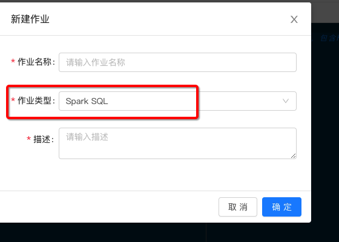
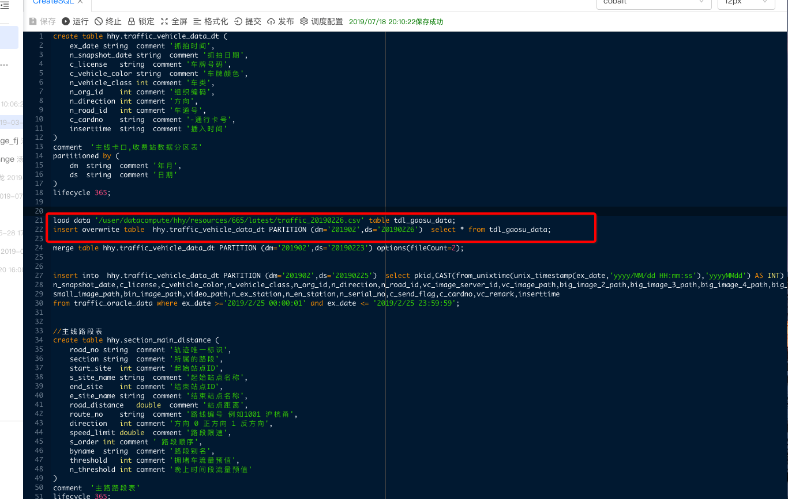
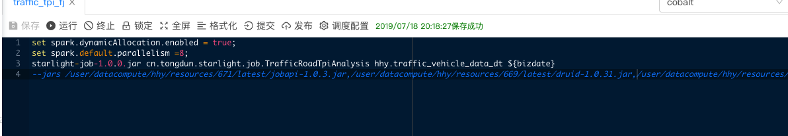
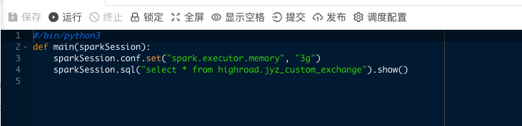
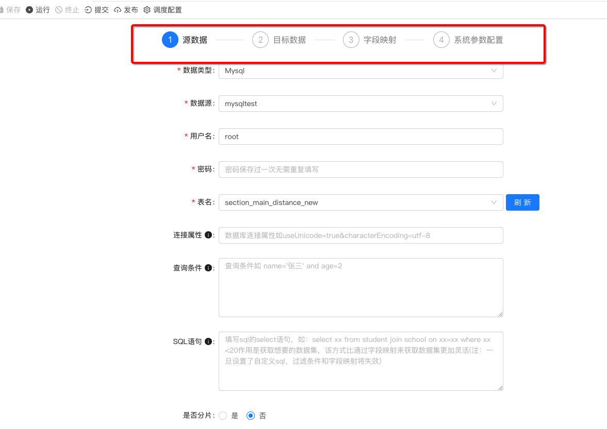
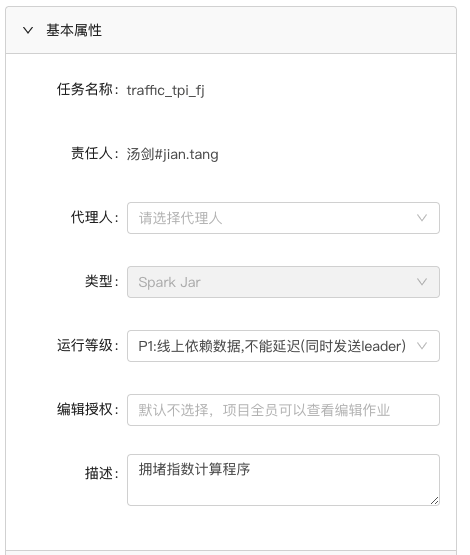
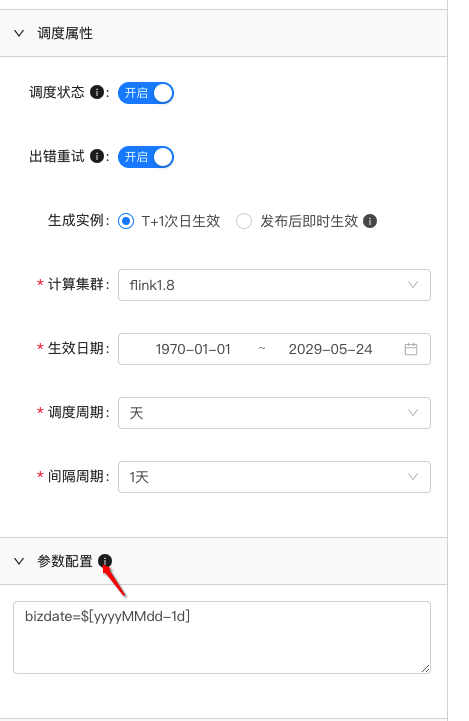
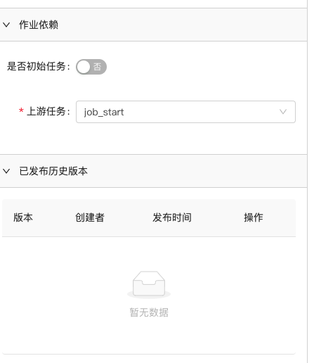
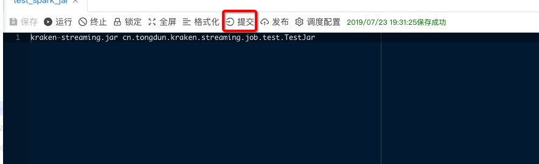
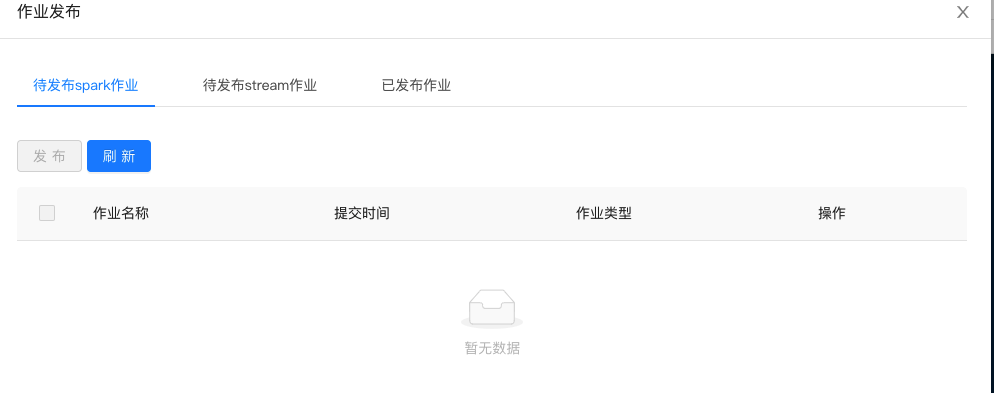

作业开发
作业开发是数据开发的核心模块 主要包含了创建不同类型的作业，开发作业，运行调试，调度的配置和发布调度作业。
1 创建作业
左边栏目 选择作业开发，点击搜索框边上的第2个图标或者选中某个文件夹点击右键,点击“创建作业”：

根据不同的项目类型作业类型也不同填写作业名称和描述后：点击确定 创建作业
作业名称只能包含数字、字母、小数点、下划线、中划线, 且首尾只能是数字和字母
2 作业编辑开发
2.1 SQL作业
创建作业类型为Spak SQL的作业,开发基于SQL的作业 SQL语法请参考

可以选中具体的红框内的SQL 点击“运行按钮” 执行部分SQL
2.2 Jar包作业
下面介绍Spark JAR包开发的作业 创建类型为Spak JAR的作业 如下:

前面2行 set 可以指定Spark作业的系统参数和自定义参数,自定义参数可以更加sparkConf配置获取
后面2行 就是指定具体的jar包资源 入口类 依赖的类Spark jar作业开发参考
2.3 Python作业
创建类型为Python的作业支持Python2,3和Pyspark 2.4和部分机器学习库 如下:

2.4 数据交换作业
数据交换主要功能是不同异构数据源之间的数据的传输。
目前支持主流的关系数据库和 HDFS,HIVE(数据仓库),HBASE(列式数据库) 后续会开放更多的主流数据源。

头部红色的框为配置导航栏 分为
- 1 源数据的配置 对输入数据源的连接，选择表，自定义查询条件等的配置。
- 2 目标数据源配置 对输出源的配置。
- 3 字段映射 表和表之间的字段匹配映射 可以自动读取。
- 4 系统参数配置4个步骤。分布式读取的资源和读取速率的配置
3 调度配置
点击作业开发栏目的‘调度配置’
包括基本属性,调度属性,输入参数,作业依赖，发布的历史版本 5个子模块
3.1 基本属性配置

- 1 代理人 配置了代理用户后 该用户的权限和作业的Owner完全一样
- 2 运行等级 和监控告警相关 默认即可
3.2 调度属性配置

- 生成实例 支持T+1 次日生效和即时生效 即时生效只支持天,小时和分钟任务 并且不支持配置任务依赖,任务依赖只支持T+1模式
- 计算集群 选择要调度的计算集群
- 调度的生效日期 在哪个日期范围可以触发调度
- 调度的周期 支持(天，周，日。分。) 不同的实际维度
3.2.1 动态参数
调度支持传入动态参数一、每个参数是一个键值对，每个参数回车换行分割; 二、常量参数值，不需要引号；例如： output_table = test_table_name; 三、时间表达式格式：$[时间格式( 加号或减号 整数值+时间类型)] 小括号后面可以省略; 1、时间格式符号：yyyy 年，MM 月，dd 天，HH 小时，mm 分钟， ss 秒; 2、时间类型：y 年，M 月，d 天，h 小时，m 分钟，s 秒; 3、加号或者减号，表示在当前时间上加减操作，例如：bizdate=$[yyyyMMdd - 1d]，表示昨天，今天为20170712，计算结果值为：20170711。 实例一：任务按照小时运行，bizdate=$[yyyyMMddHH]; 实例二：例如activity_flat时间分区字段为year，month，day，任务T+1运行，表达式为：year=$[yyyy-1d], month=$[MM-1d], day=$[dd-1d]; 实例三：计算上一个月值， bizdate=$[yyyyMM-1M]。 具体的作业中的引用为${bizdate}3.4 作业依赖配置

只有T+1发布模式支持配置作业依赖，若作业没有上游的依赖任务 则勾选为初始任务。
有上游依赖任务的话，则在上游任务输入框里搜索相应的任务名 进行依赖配置
4 作业提交和发布
4.1 作业提交
配置好作业的调度配置后，点击提交按钮提交作业

4.2 作业发布
点击工具栏的发布按钮,进入到发布tab的待发布的作业类型的选项卡下面 选择勾选要发布的作业，点击发布 即可发布作业，在已发布的作业选项卡就可以看到刚发布的作业。
同时在运维中心模块 作业管理下可以查询发布作业的状态3.4.3 作业管理
